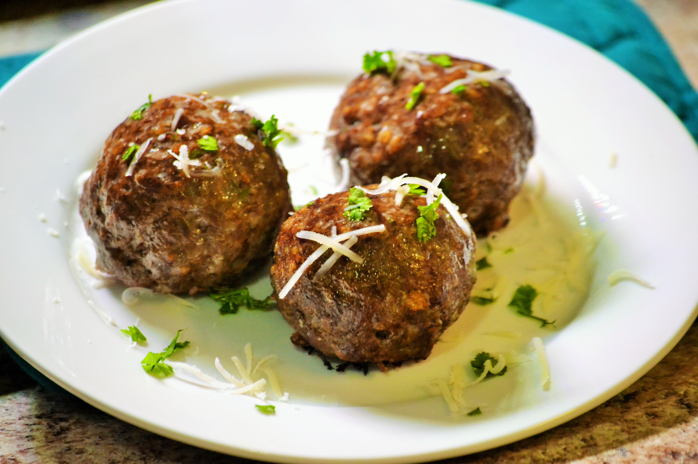

Baked Meatballs

This recipe makes the most tender and tasty meatballs. I also freeze these meatballs and take out how many servings I need for each meal. If cooking in sauce, add baked meatballs 20 minutes before serving time.
Ingredients
- 1 (16 ounce) package lasagna noodles
- 1 pound fresh mushrooms, sliced
- ¾ cup chopped onion
Directions
- Cook the lasagna noodles in a large pot of boiling water for 10 minutes, or until al dente. Rinse with cold water, and drain.
- In a large saucepan, cook and stir mushrooms, green peppers, onion, and garlic in oil. Stir in pasta sauce and basil; bring to a boil. Reduce heat, and simmer 15 minutes.
- Mix together ricotta, 2 cups mozzarella cheese, and eggs.
- Preheat oven to 350 degrees F (175 degrees C). Spread 1 cup tomato sauce into the bottom of a greased 9x13 inch baking dish. Layer 1/2 each, lasagna noodles, ricotta mix, sauce, and Parmesan cheese. Repeat layering, and top with remaining 2 cups mozzarella cheese.
- Bake, uncovered, for 40 minutes. Let stand 15 minutes before serving.